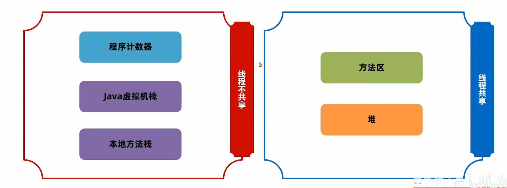

7-运行时数据区域
运行时数据区域
线程不共享：
程序计数器
Java虚拟机栈
本地方法栈
线程共享：
方法区
堆

程序计数器
也叫PC寄存器，存放接下来要执行的内存地址。
作用
控制执行，分支，跳转，异常
多线程上下文切换，执行
字节码指令被类加载器拿到内存后，会存在内存。
代码保存到了哪里？
栈
规范规定了两个栈，一个用来保存Java实现的方法，一个用来保存native的cpp方法
但是 hotspot 只用了一个栈
先进后出
栈帧和线程生命周期相同：随着线程创建而创建，同时随着它的销毁后被回收。
栈帧的内容：
局部变量表：局部变量
操作数栈：临时数据
帧数据：动态链接，方法出口，异常表的引用
局部变量表
局部变量表在栈帧中是一个数组，一个位置是 slot ，除了 long 和 double 占用两个槽，其他类型占用一个槽
如果是实例方法：
this引用（内存地址）
方法参数
局部变量
为了节省空间，槽可以复用，某个局部变量不再生效当前槽就可以再次被使用。
操作数栈
栈帧中执行指令过程中存放临时数据，栈式的数据结构
编译的时候就可以确定它的最大深度，从而执行的时候正确分配大小
编译器模拟走一遍字节码指令
帧数据
主要包含
动态链接
方法出口
异常表的引用
动态链接
当前类的字节码指令引用了其他类的属性或者方法，需要将符号引用转为对应的运行时常量池中的内存地址（如果是同一个类，那么类加载连接阶段-解析阶段完成）
动态链接就保存了编号到运行时常量池的内存地址的映射关系。
方法出口
方法在正确或者异常结束时，当前栈帧会被弹出，同时程序计数器应该指向上一个栈帧中的下一条指令的地址。所以在当前栈帧中，需要存储出口的地址。
异常表
异常表存放的是代码异常的处理信息，包含了异常捕获的生效范围以及异常发生后跳转到的字节码指令位置
栈内存溢出
StackOverflowError：栈帧过多，会内存溢出
这个设置有范围
1 | //默认单位是字节，必须是1024倍数 |
堆
堆内存空间占用最多，一般 new 出来的对象都在堆上。
栈上的局部变量表，可以存放堆上对象的引用
静态变量（这个存在堆的Class对象） 也可以存放堆对象的引用，通过静态变量可以实现对象在线程之间的共享
堆内存溢出（OutOfMemoryError）
堆有最大内存限制
关注三个值
used已经用了多少total当前已经分配的内存max最大的可以分配内存
JVM不断分配内存，total 不断变大，最多只能和
max 相等
但是不是三者相等才会堆内存溢出
可以设置初始的 total 以及 max
最好两者设置一样，无需再次向 JVM 申请空间，因为可以
减少申请并分配内存的时间花销
也不会出现内存过剩之后堆收缩的情况
1 | //初始的total |
方法区
定义
方法区是《Java虚拟机规范》的虚拟概念，实现不一定相同。
HotSpot设计：
- JDK7以前方法区放在堆的永久代空间，堆的大小由虚拟机参数控制（杂糅，不好）
1 | -XX:MaxPermSize=... |
- JDK8以后存放在元空间，元空间位于操作系统维护的直接内存。默认是不超过操作系统上限，无限分配
1 | -XX:MaxMetaspace=... |
存放内容
方法区存放基础信息，线程共享，主要内容：
类的元信息，一般称为 InstanceKlass，在类的加载阶段完成。
运行时常量池
字符串常量池
元信息
字节码文件中通过编号找到常量，常量池是静态常量池
加载到内存后，可以通过内存地址快速定位到常量池中的内容，是运行时常量池
字符串常量池
编译的时候会保存在字节码文件的静态常量池
读取到内存的时候放在字符串常量池
1 | //堆内存，但是字符串常量池也有一个 |
早期设计，字符串常量池是运行时常量池的一部分，存储位置一样（堆的永久代）
JDK7，将字符串常量池移到堆中
JDK8以后，元空间代替永久代
String的两种拼接
如果有变量，那么直接StringBuilder
如果常量，编译的时候已经拼接。用的字符串常量池
intern：可以手动将字符串放入字符串常量池，返回字符串常量池对象的地址
1 | String input1=scanner.next().intern();//itheima |
1 | //JDK6以前：false false |
JDK6以前复制到字符串常量池，返回地址
JDK7以后，因为字符串常量池在堆上，
intern会把第一次遇到的字符串的引用放入到字符串常量池
静态变量存储
JDK6及以前，静态变量放在方法区，即永久代
JDK7之后，放在堆的 Class 对象，脱离了永久代
JDK6
JDK7
直接内存
不在规范存在，所以不属于 Java 运行时区域 JDK1.4 以后引入了 NIO 机制，使用了直接内存，主要为了解决：
Java堆对象回收，回收影响对象的创建和使用
IO操作，需要把读取文件到直接内存（缓冲区）再把数据复制到堆
现在直接可以写入直接内存，同时 Java 堆维护直接内存的引用，减少复制开销。
创建内存的数据，可以使用 ByteBuffer
1 | ByteBuffer directBuffer=ByteBuffer.allocateDirect(size); |
如果需要手动调整直接内存上限 1
-XX:MaxDirectMemorySize=大小